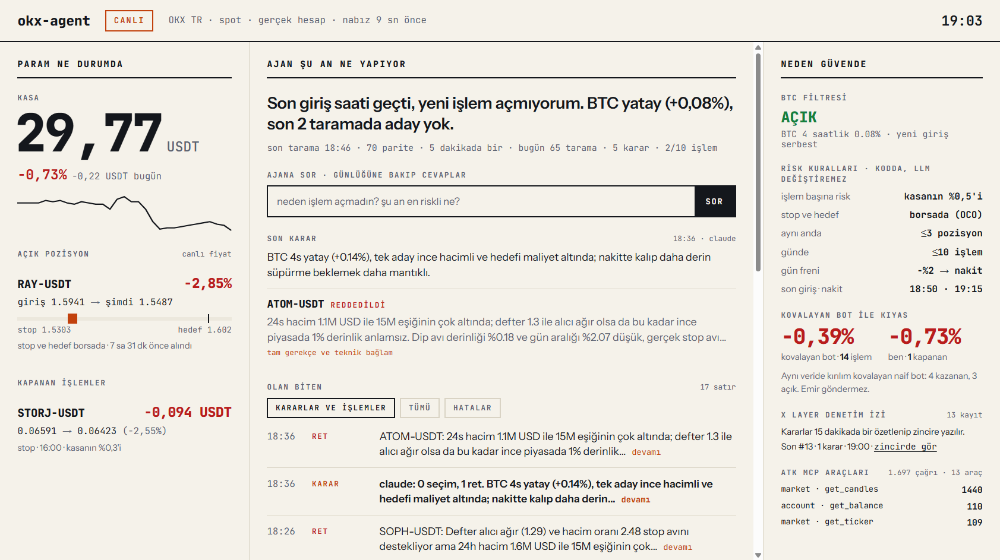

OKX TR spot piyasasında gerçek parayla çalışan otonom trading ajanı.
BTC düştüyse dur. Son 3 saatin dibini delip geri dönen coini bul. Fırlamış coini kovalama.
Adayı seç ya da reddet, gerekçesini yaz. Boyut, stop ve fren hakkında söz hakkı yok.
İşlem başına kasanın %0,5'i. Aynı anda 3 pozisyon. Gün −%2'de fren: her şey nakit.
Limit alış. Hedef ve stop OKX'te durur; ajan, laptop ya da internet düşse de pozisyon korumasız kalmaz.
Seçim, ret, alış, stop: hepsi gerekçesiyle. 15 dakikada bir özeti zincire yazılır.
WIF, 16:31, reddedildi: "dip sığ, düşen bıçak riski." 70 dakika sonra ölçtük: hedef görülmedi. Ret doğruydu.
/durumkasa, BTC filtresi, pozisyon, işlem sayısı
/pozisyonaçık pozisyon, anlık kâr/zarar
/adaylarson taramanın adayları ve gerekçe
/neden COINo coin için yazılan gerekçeler
/kurallarrisk kuralları
/raporperformans dökümü
/zincirX Layer kayıtları
/duracil fren: her şeyi sat, yeni işlem yok
/devamfreni kaldır
/mod onaylıher girişten önce sorar; 60 sn'de "evet" yoksa açmaz
soru"neden işlem açmadın?" · günlükten cevaplar
